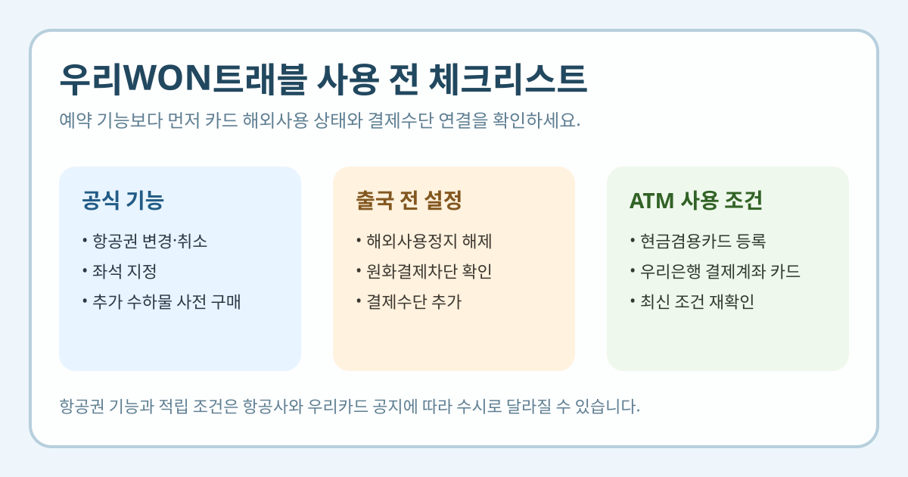

우리WON트래블을 찾는 분들은 대개 항공권 할인이나 여행 특가부터 떠올리지만, 실제로는 내 카드의 해외이용 설정, 어디까지 직접 처리할 수 있는지, 예매 후 기능 제한이 없는지를 먼저 보는 편이 덜 헷갈립니다.
이 글은 2026년 3월 29일 기준 우리카드 공식 우리WON트래블 페이지와 해외여행라운지 안내를 바탕으로 정리했습니다. 항공권 조건, 이벤트, 적립, 해외 이용 가능 범위는 수시로 바뀔 수 있으니 실제 예약과 결제 전에는 우리카드 최신 화면을 다시 확인하세요.

공식 페이지에서 바로 확인되는 핵심 기능
우리카드 공식 우리WON트래블 페이지에는 이 서비스가 우리카드만의 여행 플랫폼이라고 소개돼 있습니다. 같은 페이지에는 현재 아래 기능이 명시돼 있습니다.
- 항공권 변경 및 취소 가능
- 항공권 예매 후 바로 원하는 좌석 지정 가능
- 추가 수하물 사전 구매 가능
다만 공식 문구에도 항공사 사정에 의해 일부 기능이 제한될 수 있다고 적혀 있습니다. 그래서 블로그 후기보다 지금 예약하려는 항공권에서 실제로 변경·좌석·수하물이 모두 열리는지를 다시 보는 편이 좋습니다.
예약 전에 꼭 볼 해외이용 설정
우리카드 공식 해외여행라운지는 “내 카드 해외이용 설정” 항목을 별도로 두고 있습니다. 여기에는 해외 사용정지 등록 시 해외 가맹점 및 ATM 거래가 차단된다고 안내돼 있습니다.
즉, 우리WON트래블에서 예약 화면까지 잘 들어가도 카드 자체가 해외 사용정지 상태라면 실제 여행 중 결제나 현지 사용에서 막힐 수 있습니다. 여행 직전에는 아래를 같이 점검하는 편이 안전합니다.
- 카드 해외사용정지 해제 여부
- 원화결제차단 설정 여부
- 알림 서비스 등록 여부
- 결제수단 추가 완료 여부
해외 ATM 인출은 누구나 되나요?
우리카드 해외여행라운지에는 신용카드로 해외ATM 예금인출 가능이라는 안내가 보이지만, 동시에 현금겸용카드 등록 및 우리은행 결제계좌 카드에 한해 적용된다고 적혀 있습니다.
즉, “우리카드니까 해외 현금 인출도 당연히 된다”로 보면 안 됩니다. 현금겸용 등록과 결제계좌 조건이 맞는지 확인해야 하고, 실제 수수료와 이용 가능 국가도 별도 확인이 필요합니다.
결제수단 추가는 왜 중요할까요?
우리WON트래블과 해외여행라운지 페이지 모두 하단에 결제 수단을 추가하라는 안내가 보이고, 예시로 카드등록, 계좌결제(체크) 등록 0.2% 적립, 꿀머니 추가 등이 표시됩니다.
이 정보만 봐도 알 수 있는 점은, 단순히 플랫폼만 여는 것으로 끝나지 않고 실제 결제수단 연결 상태가 중요하다는 것입니다. 특히 출국 직전에 결제수단이 비어 있으면 예약 흐름이 끊기기 쉽습니다.
이런 분들에게 특히 실용적입니다
- 우리카드 앱 안에서 여행 예약 동선을 줄이고 싶은 사람
- 항공권 변경·취소 가능 여부를 미리 보고 싶은 사람
- 예매 직후 좌석 지정과 수하물 추가를 한 화면에서 처리하고 싶은 사람
- 출국 전 해외 결제 설정과 ATM 가능 여부를 함께 점검하려는 사람
반대로 이미 다른 OTA나 항공사 앱을 주로 쓰는 경우라면, 우리WON트래블의 장점은 기능 통합에 있고 가격 자체는 예약 시점마다 달라질 수 있으니 실제 결제금액 비교가 더 중요합니다.
예약 전에 다시 확인할 체크리스트
- 원하는 항공편에서 변경·취소가 실제 가능한지 확인
- 좌석 지정과 추가 수하물 기능이 해당 항공권에 열려 있는지 확인
- 카드 해외사용정지 해제 여부 확인
- 해외ATM 인출이 필요한 경우 현금겸용 등록과 계좌 조건 확인
- 결제수단 추가와 적립 조건 확인
한 번에 요약하면
- 우리WON트래블 공식 페이지에는 항공권 변경·취소, 좌석 지정, 추가 수하물 사전 구매 기능이 안내돼 있습니다.
- 다만 항공사 사정으로 일부 기능이 제한될 수 있다고 공식 페이지가 밝히고 있습니다.
- 해외여행라운지 기준으로 해외 사용정지 상태면 해외 가맹점·ATM 거래가 차단됩니다.
- 해외ATM 예금인출은 현금겸용카드 등록과 우리은행 결제계좌 카드 조건이 붙습니다.
- 예약 기능과 결제 조건은 바뀔 수 있으니 실제 사용 전 우리카드 최신 화면을 다시 보는 편이 안전합니다.
자주 묻는 질문
Q. 우리WON트래블에서 항공권 변경과 취소가 항상 가능한가요?
우리카드 공식 페이지에는 가능하다고 안내되지만, 동시에 항공사 사정에 따라 일부 기능이 제한될 수 있다고 적혀 있습니다. 예약 단계에서 실제 조건을 다시 확인해야 합니다.
Q. 해외여행 전에 카드 설정도 따로 봐야 하나요?
네. 해외여행라운지에는 해외 사용정지 등록 시 해외 가맹점 및 ATM 거래가 차단된다고 안내돼 있어, 예약 전후로 꼭 확인하는 편이 좋습니다.
Q. 해외 ATM 출금도 바로 되나요?
공식 안내상 현금겸용카드 등록과 우리은행 결제계좌 카드 조건이 붙습니다. 필요하면 여행 전에 미리 신청 상태를 점검해야 합니다.
공식 링크
예약 가능 기능, 이벤트, 적립, 해외 이용 설정 조건은 수시로 바뀔 수 있습니다. 실제 결제와 출국 전에는 위 우리카드 공식 페이지의 최신 문구를 다시 확인하세요.